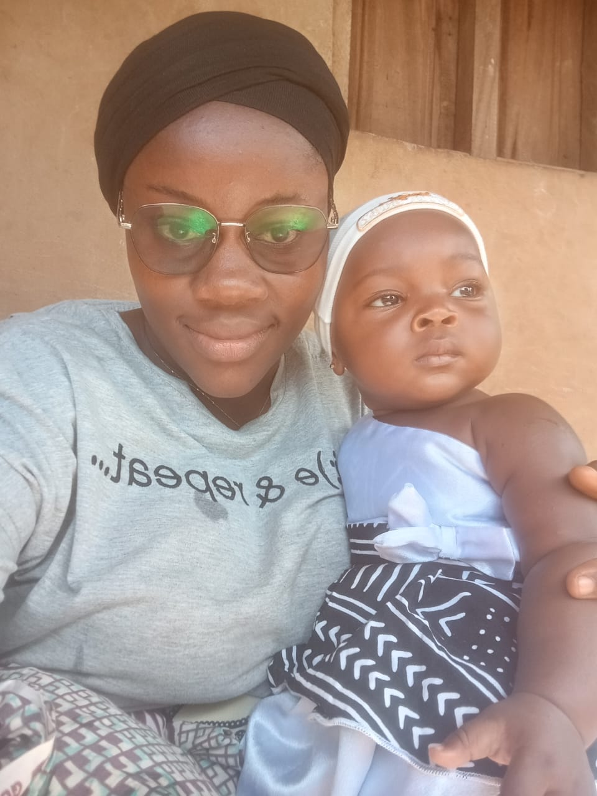

01 / Jeunesse & avenir
Études, orientation, ambitions
Accompagner les élèves, étudiants et jeunes diplômés face aux choix, aux attentes et aux réalités du monde.
Un espace de réflexion sur les réalités de notre société : jeunesse, études, emploi, autonomie des jeunes femmes et petites opportunités qui peuvent changer un parcours.
Pourquoi tant de jeunes diplômés peinent-ils à trouver leur place ? Que recherchent réellement les employeurs ? Comment les jeunes femmes peuvent-elles gagner en autonomie et saisir les occasions qui se présentent ? Ce blog aborde ces questions avec lucidité, respect et envie de faire avancer le débat.
Ici, pas de leçons toutes faites ni de jugement. Des réflexions ancrées dans la vie quotidienne, des pistes pratiques et des conversations pour aider chacun à développer ses capacités et à prendre des initiatives.
« Comprendre le monde autrement peut nous aider à y prendre une place plus juste. »
Des discussions utiles, parfois sensibles, toujours ouvertes : l'objectif est de réfléchir ensemble et de transformer les idées en actions.
Accompagner les élèves, étudiants et jeunes diplômés face aux choix, aux attentes et aux réalités du monde.
Diplôme, savoir-faire, attitude, expérience : comprendre ce qui aide à convaincre un employeur.
Apprendre à repérer les petites occasions, prendre des initiatives et construire avec les moyens disponibles.
Parler de confiance, d'autonomie, de choix et de possibilités pour les filles et les jeunes femmes.
Mettre en discussion les comportements, les attentes et les réalités qui façonnent notre quotidien.
Ne pas mépriser les petits débuts : une occasion modeste peut devenir une étape importante.

Un salaire et de bonnes conditions sont légitimes. Mais pour préparer son avenir professionnel, il est aussi essentiel de développer des compétences, de savoir les démontrer et de comprendre la valeur que l'on peut apporter.
Cela ne justifie ni les rémunérations injustes ni l'exploitation. Cela rappelle simplement que les opportunités se construisent aussi par l'apprentissage, la curiosité et l'initiative.
Les opportunités ne sont pas toujours grandes au départ. Parfois, c'est notre manière de les saisir qui leur donne de la valeur.
Une réflexion à poursuivre
Le blog proposera des articles sur l'emploi, les compétences, les réalités des jeunes diplômés, l'autonomie des jeunes femmes et l'importance de prendre des initiatives.
Chaque publication cherchera à poser les bonnes questions, partager des pistes concrètes et ouvrir un échange respectueux.
Découvrir le blog ↗Les réalités de la jeunesse et de notre société méritent d'être discutées avec sincérité. Vos témoignages et vos idées enrichiront cette conversation.